<!DOCTYPE html>
<html lang="en">

<head>
    <meta charset="UTF-8">
    <meta name="color-scheme" content="only light">
    <meta http-equiv="X-UA-Compatible" content="IE=edge">
    <meta name="viewport" content="width=device-width,initial-scale=1">
    <title>25 лет Достинексу</title>
    <script src="https://cdn.jsdelivr.net/npm/jquery@3.5.1/dist/jquery.min.js"></script>
    <script src="https://cdn.jsdelivr.net/gh/fancyapps/fancybox@3.5.7/dist/jquery.fancybox.min.js"></script>
    <link rel="stylesheet" href="https://cdn.jsdelivr.net/gh/fancyapps/fancybox@3.5.7/dist/jquery.fancybox.min.css">
<script defer="defer" src="./assets/scripts/main.js"></script><link href="./assets/styles/main..css" rel="stylesheet"></head>

<body class="dostineks-body">
    <main class="dostineks-main">
        <section class="title">
            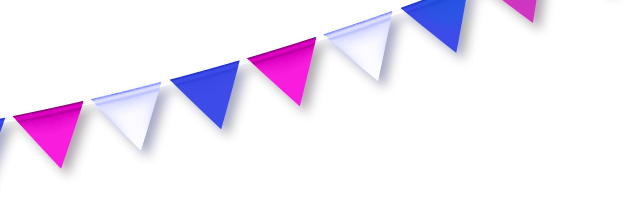
            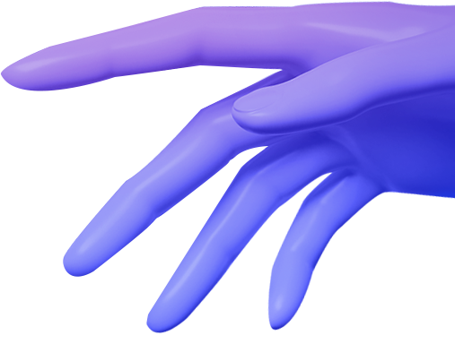
            
            <div class="container">
                <div class="header__wrap">
                    
                    <ul class="title__list">
                        <li class="title__list__item">
                            40 лет <br>
                            молекуле
                        </li>
                        <li class="title__list__item">
                            25 лет <br>
                            в России
                        </li>
                        <li class="title__list__item">
                            26 лет <br>
                            в мире
                        </li>
                    </ul>
                    
                    <span class="title__main-desc">
                        Тонкая настройка <br>
                        гормонального <br>
                        фона
                    </span>
                </div>
            </div>
            
            <a href="#next" data-scroll="" class="title__scroll__btn">
                <span>Прокрутите вниз</span>
                
            </a>
        </section>
        <section class="history" id="next">

            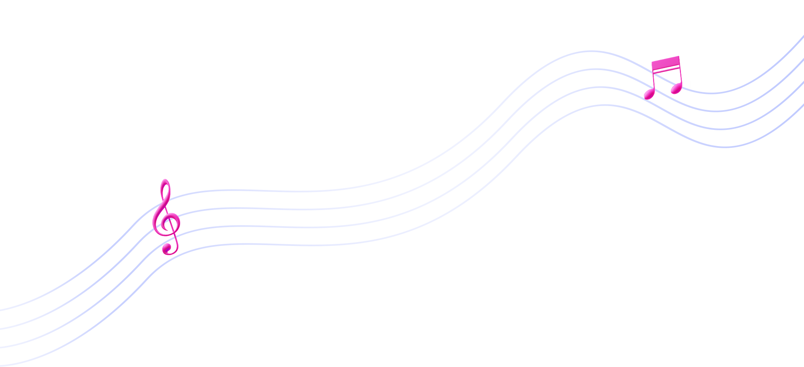
            
            <div class="container">
                <h2 class="history__heading">
                    Рука об руку
                    с мировой историей
                </h2>
                <p class="history__desc">
                    Достинекс® динамично развивается вместе с миром,
                    помогая в настройке гормонального фона. 
                    
                </p>
            </div>
        </section>
        <section class="brain">
            
            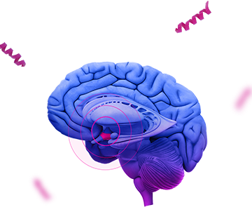
            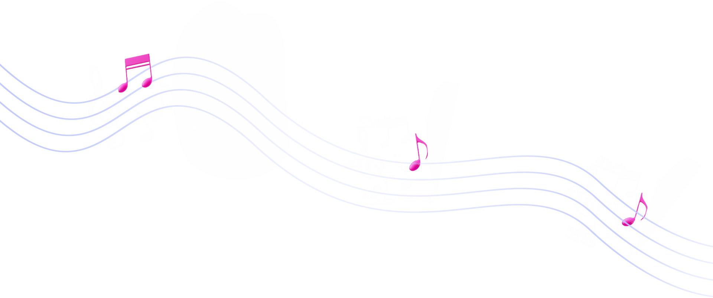
            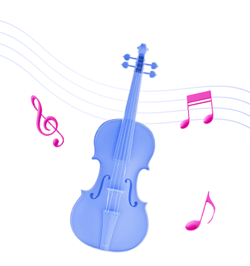
            <div class="container">
                <div class="brain__start-item">
                    <span class="brain__start-item__headline">До <b>1983</b></span>
                    <span class="brain__start-item__text">
                        года не было селективных к D2-рецепторам препаратов для лечения патологической гиперпролактинемии.                        
                    </span>
                </div>

                <div class="brain__line-item">
                    <div class="brain__line-item__wrap _headline">
                        <span class="brain__line-item__header">
                            История  <br>
                            ДОСТИНЕКС®                            
                        </span>
                        <span class="brain__line-item__header">
                            История <br>
                            музыкальной 
                            культуры                             
                        </span>
                    </div>
                    <div class="brain__line-item__wrap">
                        <span class="brain__line-item__text">
                            <span class="brain__line-item__header _mob">
                                История  <br>
                                ДОСТИНЕКС®                            
                            </span>
                            Синтезировано действующее 
                            вещество препарата Достинекс® в ходе экспериментов с полусинтетическими <br>
                            производными алкалоидов <br>
                            спорыньи.     
                            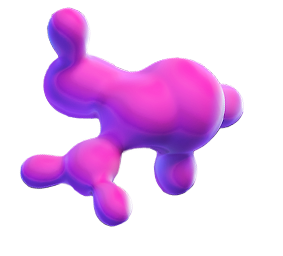               
                        </span>
                        <span class="brain__start-item__headline"><b>1983</b></span>

                        <span class="brain__line-item__text">
                            <span class="brain__line-item__header _mob">
                                История <br>
                                музыкальной 
                                культуры                             
                            </span>
                            Образована норвежская группа A-ha, новое  синтезаторно-гитарное звучание музыкантов быстро обретает популярность <br>
                            во всем мире.                            
                                           
                        </span>
                    </div>
                </div>

                <div class="brain__line-item">
                    
                    <div class="brain__line-item__wrap">
                        <span class="brain__line-item__text">
                            <span class="brain__line-item__header _mob">
                                История  <br>
                                ДОСТИНЕКС®                            
                            </span>
                            Достинекс® включен<br>
                            в Европейские рекомендации <br>
                            по лечению ГПРЛ. <br><br>  

                            Начало формирования опыта <br>
                            Достинекс®  в нормализации<br>
                            клиники, снижении уровня<br>
                            пролактина, редукции<br>
                             опухоли.
                                           
                        </span>
                        <span class="brain__start-item__headline"><b>1994</b></span>
                        <span class="brain__line-item__text">
                            <span class="brain__line-item__header _mob">
                                История <br>
                                музыкальной 
                                культуры                             
                            </span>
                            Уитни Хьюстон становится триумфатором 36-й церемонии «Грэмми», <br>
                             получив три статуэтки, включая главную награду  «Запись года» с песней<br> 
                            «I Will Always Love You».                            
                                           
                        </span>
                    </div>
                </div>

                <div class="brain__line-item">
                    
                    <div class="brain__line-item__wrap">
                        <span class="brain__line-item__text">
                            <span class="brain__line-item__header _mob">
                                История  <br>
                                ДОСТИНЕКС®                            
                            </span>
                            В результате полноценных доклинических исследований <br>
                            и испытаний Достинекс® <br>
                            был включен в Клинические рекомендации России <br>
                            и одобрен FDA. 
                                           
                        </span>
                        <span class="brain__start-item__headline"><b>1996</b></span>
                        <span class="brain__line-item__text">
                            <span class="brain__line-item__header _mob">
                                История <br>
                                музыкальной 
                                культуры                             
                            </span>
                            Майкл Джексон начал новый <br>
                            мировой тур HIStory World <br>
                            Tour, в рамках которого <br>
                            состоялся второй приезд <br>
                            Джексона в Россию: певец <br>
                            дал концерт на стадионе <br>
                            «Динамо» в Москве.                           
                                           
                        </span>
                    </div>
                </div>

                <div class="brain__line-item">
                    
                    <div class="brain__line-item__wrap" style="justify-content: center; align-items: center;">
                        
                        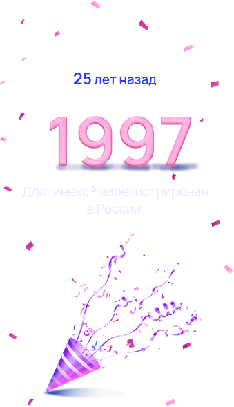
                    </div>
                </div>

                <div class="brain__line-item">
                    
                    <div class="brain__line-item__wrap">
                        <span class="brain__line-item__text">
                            <span class="brain__line-item__header _mob">
                                История  <br>
                                ДОСТИНЕКС®                            
                            </span>
                            Достинекс® подтвердил высокую безопасность <br>
                            и эффективность <br>
                            по результатам <br>
                            метаанализа. 
                                           
                        </span>
                        <span class="brain__start-item__headline"><b>2021</b></span>
                        <span class="brain__line-item__text">
                            <span class="brain__line-item__header _mob">
                                История <br>
                                музыкальной 
                                культуры                             
                            </span>
                            Майкл Джексон начал новый <br>
                            мировой тур HIStory World <br>
                            Tour, в рамках которого <br>
                            состоялся второй приезд <br>
                            Джексона в Россию: певец <br>
                            дал концерт на стадионе <br>
                            «Динамо» в Москве.                           
                                           
                        </span>
                    </div>
                </div>

                <div class="brain__line-item _last-item">
                    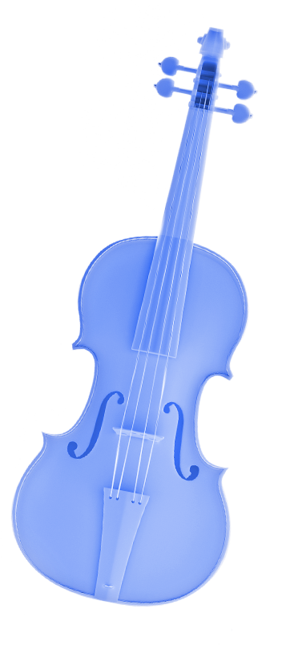
                    <div class="brain__line-item__wrap">
                        <span class="brain__start-item__headline"><b>Наше время</b></span>
                        <span class="_last-item__text-box">
                            Достинекс® <span class="pink">остается препаратом выбора и препаратом <br>
                            самого последнего поколения</span> для лечения <br>
                            пациентов с гиперпролактинемией.                             
                        </span>
                    </div>
                </div>
            </div>
        </section>
        <section class="facts">
            
            <div class="container">
                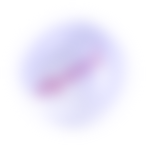
                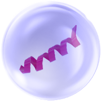
                <h3 class="facts__heading">Интересные факты</h3>
                <div class="facts__wrap">
                    <div class="facts__video-wrap">
                        <div class="facts__video"></div>
                        <span class="facts__video__desc">Секреты производства достинекс</span>
                    </div>
                    <div class="facts__desc">
                        <p class="facts__desc__text">
                            <span class="pink _mob-head">
                                Достинекс® производится только на заводе Pfizer <br>
                                в Италии в городе Асколи-Пичено.
                            </span>
                            Город расположен в области Италии – Марке, в 20 км от Адриатического моря в окружении горных вершин. 
                            <br><br>
                            Асколи-Пичено называют городом 100 башен – действительно, башен здесь сохранилось много, а Народная площадь (piazza del Popolo) считается одной из самых красивых в Италии. 
                        </p>
                    </div>
                </div>
            </div>
        </section>
        <section class="facts mech">
            
            <div class="container">
                <h3 class="facts__heading">Достинекс®</h3>
                <div class="facts__wrap">
                    <div class="facts__video-wrap">
                        <div class="facts__video"></div>
                        <span class="facts__video__desc">Механизм действия Достинекс®</span>
                    </div>
                    <div class="facts__desc">
                        <p class="facts__desc__text">
                            <b class="_mob-head">
                                Селективность, которая обеспечивает высокую безопасность и эффективность терапии.
                            </b>
                            <br><br>
                            <span class="pink">Достинекс® характеризуется выраженным и длительным пролактинснижающим действием,</span>обусловленным прямой стимуляцией D2-дофаминовых рецепторов лактотропных клеток гипофиза.
                            <br><br>
                            Достинекс® обладает строго избирательным действием <br>
                            и не оказывает влияния <br>
                            на базальную секрецию других <br>
                            гормонов гипофиза и кортизола.
                        </p>
                    </div>
                </div>
            </div>
        </section>
        <section class="link">
            
            <div class="container">
                <div class="link__wrap">
                    <div class="link__left">
                        
                         

                        
                        <span class="link__left__text">
                            Бесплатные материалы <br> 
                            по гиперпролактинемии 
                            <a href="#" class="pink">prolactin-info.ru</a>                    
                        </span>
                    </div>
                </div>
            </div>
            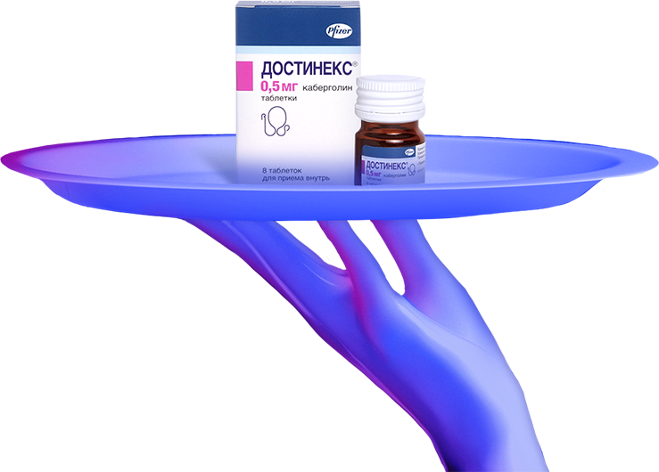
        </section>
    </main>
    <footer class="dost-footer">
        <div class="container">
            <div class="footer__wrap">
                <div class="footer__left">
                    <p>
                        1. Инструкция по медицинскому применению лекарственного препарата <br>
                        Достинекс®  П N013905/01.<br>
                        2. Дедов И.И., Мельниченко Г.А. Эндокринология. Клинические рекомендации <br>
                        Российской ассоциации эндокринологов  «Гиперпролактинемия: клиника, <br>
                        диагностика, дифференциальная диагностика, методы». 2016.<br>
                        3. Mariana Millan Fachi 1, Lays de Deus Bueno 2, Denise Colaço de Oliveira 2. LetíciaLazarin da Silva 2, Aline F Bonetti 1. Efficacy and safety in the treatment <br>
                        of hyperprolactinemia: A systematic review and network meta-analysis . J Clin <br>
                        Pharm The 2021 Dec;46(6):1549-1556.<br>
                        4. Shlomo Melmed 1, Felipe F Casanueva, Andrew R Hoffman, <br>
                        David L Kleinberg, Victor M Montori, Janet A Schlechte, John A H Wass. Diagnosis<br> 
                        and treatment of hyperprolactinemia: an Endocrine Society clinical practice guideline.<br> 
                        Endocrine Society J Clin Endocrinol Metab. 2011 Feb;96(2):273-88.
                        <br><br>
                        Служба Медицинской Информации: <br>
                        Medinfo.Russia@Pfizer.com. Доступ к информации о рецептурных препаратах <br>
                        Pfizer в России: www.pfizermedinfo.ru  <br>                  
                    </p>
                </div>
                <div class="footer__right">
                    
                    <p>
                        ООО «Пфайзер Инновации»<br>
                        Россия, 123112, Москва, Пресненская набережная, д. 10.<br>
                        Тел.: +7 495 287 5000, факс: +7 495 287 5300.<br>
                        www.pfizer.ru<br>
                        <br><br>
                        Copyright 2021 Пфайзер Россия. Все права защищены. Информация, размещенная на данном веб-сайте, предназначена только для специалистов <br>
                        здравоохранения РФ.
                        <br><br>
                        PP-DOS-RUS-0697 / 27.04.2022                  
                    </p>
                </div>
            </div>
        </div>
    </footer>
</body>

</html>